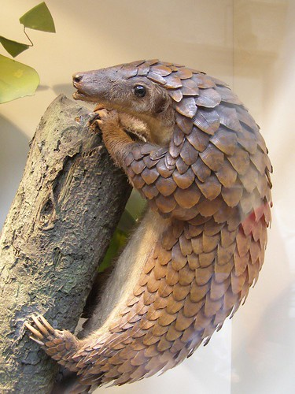

Pangolins, sometimes known as scaly anteaters,[6] are mammals of the order Pholidota (/fɒlɪˈdoʊtə/, from Ancient Greek ϕολιδωτός 'clad in scales').[7] The one extant family, Manidae, has three genera: Manis, Phataginus and Smutsia. Manis comprises the four species found in Asia, while Phataginus and Smutsia include two species each, all found in sub-Saharan Africa.
